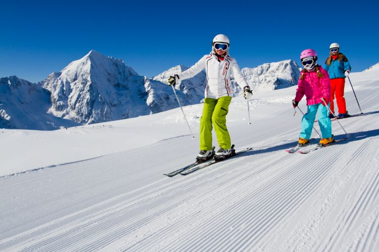
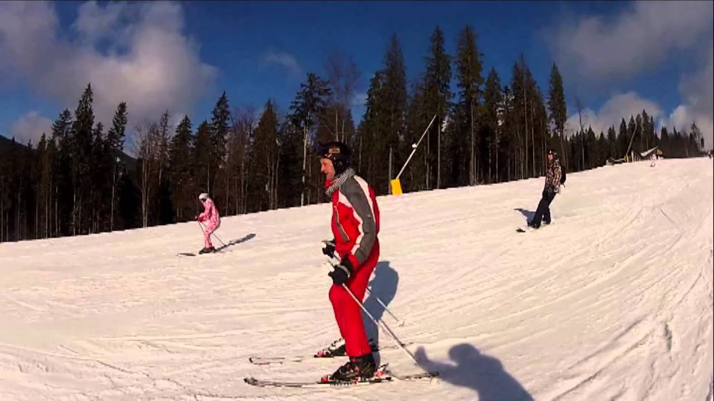
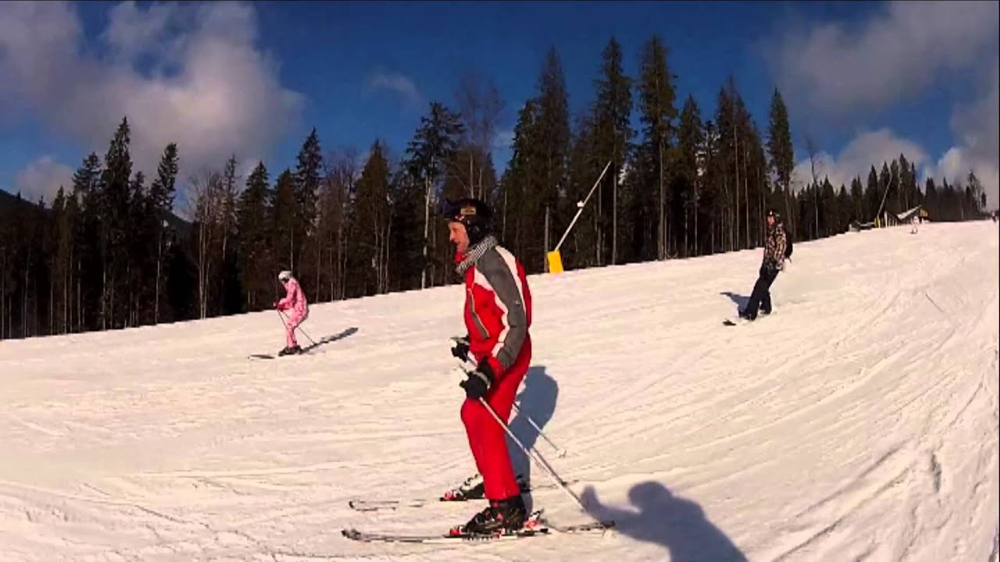

Sniego zona - slidinėjimas, slidės, snieglentės
2020.10.30 03:16
Here is a description of the location. It can contain HTML elements, like links .
Sniego zonos žemėlapis
Slidinėjimo kurortai jau greitai
Email: info@sniegozona.lt
Slidinėjimo kurortai
Andora Austrija Baltarusija Bulgarija Čekija Ispanija Italija Latvija Lenkija Lietuva Norvegija Prancūzija Slovakija Švedija Šveicarija Ukraina VokietijaKurortų reitingai
1. Samnaun (Šveicarija)
2. Verbier (Šveicarija)
3. Stubaier Gletscher (Austrija)
4. Schladming (Austrija)
5. Les Arcs (Prancūzija)
6. Les Menuires (Prancūzija)
7. Ischgl (Austrija)
8. Kitzbuehel (Austrija)
9. Livigno (Italija)
10. Courchevel (Prancūzija)
Tiesiogiai iš LŽSC
Apklausa
Į kurią šalį planuojate vykti slidinėti šį sezoną?
Skaitomiausi tekstai
Atidaryti Europos slidinėjimo kurortai (lapkričio 27d.) Termo rūbai slidinėjimui Snieglentės apkaustų derinimas Druskininkų sniego arena: įkurtuvės nukeltos vasarai, tačiau pirmojo sniego laukiama jau balandį Sniego griūtys 2013/2014 Freeskier geriausios slidės
BLOGAS
Slidinėjimas Ötztal
Apklausa
Į kurią šalį planuojate vykti slidinėti šį sezoną?
Skaitomiausi tekstai
Atidaryti Europos slidinėjimo kurortai (lapkričio 27d.) Termo rūbai slidinėjimui Snieglentės apkaustų derinimas Druskininkų sniego arena: įkurtuvės nukeltos vasarai, tačiau pirmojo sniego laukiama jau balandį Sniego griūtys 2013/2014 Freeskier geriausios slidėsBLOGAS
Slidinėjimas Ötztal
Pagrindiniai slidinėjimo kurortai :
Obergurgl-Hochgurgl
trasų 112 km, mėlynų 60 km, raudonų 33 km, juodų 14 km, aukščiai 1800 - 3030 m virš jūros lygio.
Sölden
trasų 146 km, mė...
Straipsniai
Gyvenamasis namas su slidinėjimo trasa
2016-01-08Kazachstano arhitektas Shokhan Mateibekov suprojektavo daugiabutį Astanoje su slidinėjimo trasa ant stogo.
Skaityti daugiau... 0 komentarųLietuvoje
Aukštagirė - nauja slidinėjimo trasa Lietuvoje
2017-01-09Porą metų vykusias kalbas Šilalės rajone dėl naujosios slidinėjimo trasos šiais metais pabaigė jos atidarymas. Aukštagirė - taip vadinasi naujasis slidinėjimo centras. Trasos yra Aukštagirės kaime.
Skaityti daugiau... 2 komentarųŽinios iš kalnų
Nauju keltuvu į Stubai ledyną
2016-10-25Stubai kurorte spalio 22-ą dieną 7.30 ryte žurnalistams buvo pristatyta naujoji keltuvų linija 3S Eisgrat. Futuristinio dizaino trijų trosų Leitner gamintojo keltuvas, kurio ilgis 3,8 kilometro, tapo pats ilgiausias Alpėse.
Skaityti daugiau... 0 komentarųSlidės
Freeskier 2014/15 geriausios slidės
2014-10-30Freeskier žurnalo geriausios 2014/2015m. slides. Kiekviena slidė buvo vertinta penkiose kategorijose: stabilumui, karvingui, žaismingumui, šuoliukams ir universalumui. Slidės buvo testuojamos Aspene, Amerikoje.
Skaityti daugiau... 0 komentarųSnieglentės
Good Wood 2015 geriausios snieglentės
2014-10-212014/2015 geriausios snieglentės pagal Good Wood: lentos buvo suskirstytos į šešias kategorijas. 18 snieglentininkų per aštuonias dienas išbandė apie 400 snieglenčių, iš kurių buvo išrinktos 36 geriausios. Testai vyko Amerikoje Colorade Winter Park trasose.
Skaityti daugiau... 0 komentarųKita įranga
Lenz kojinės už 200 eurų
2014-11-14Kiekvienam žiemą teko patirti jausmą, kad šąla kojos. Bandydavote to išvengti: truputį atlaisvindavote batus, eidavote į šiltą patalpą, maudavotės storas kojines,
Skaityti daugiau... 2 komentarųPatarimai
Slidžių apkaustų nustatymas
2013-09-30Slidžių apkaustų nustatymas yra labai svarbus darbas prieš pradedant slidinėti. Gerai nesureguliuoti apkaustai labai dažnai sukelia kelių traumas.
Skaityti daugiau... 1 komentarųBe sniego
Kokią palapinę pirkti ?! Palapinės pasirinkimas
2012-07-08Atėjus vasarai, nemažai lietuvaičių patraukia į gamtą: plaukia baidarėmis, važiuoja prie ežerų ar prie jūros į kempingus. Vienas iš pagrindinių daiktų tokiam poilsiui yra palapinė.
Skaityti daugiau... 0 komentarųSavaitės foto
Paieška
Sniegozona video
Pipe Ground
Obergurgl-Hochgurgl web kameros vaizdai
Fotogalerija
Slidinėjimas, slidės, snieglentės...
Slidinėjimo kurortai, kurortų reitingai...
Diskusijos, foto, video...
Navigacija
Į pradžią Nariai Forumas Skelbimai Video Foto WebCam Nakvynė Orai | Keltuvai KontaktaiKontaktai:
Email: info@sniegozona.lt
- slidinėjimas | Mindaugo blogas
- Slidinėjimas - Blogger
- Slidinėjimo akademija
- Lygumų slidinėjimas (XC)
- Lėktuvu Archives - Slidinėjimas
- kalnumagija - Kalnų slidinėjimo blogas
- Lietuvos nacionalinė slidinėjimo asociacija
- Slidinėjimo kelionės
- slidinėjimas
- Slidinėjimas | Slidinėjimo kelionės | Slidinėjimo kurortai ...
- slidinėjimas | Mindaugo blogas
Iš pradžių tai buvo tik idėja tapti juridiniu vienetu, kad būtų galima oficialiai prašyti paramos, nes kalnų slidinėjimas lietuviams –… Į Pjongčangą – perrašyti istorijos 17. lapkričio 2017
- Slidinėjimas - Blogger
Slidinėjimas. Tik geriausi pasiūlymai slidinėjimo kelionėms į Austriją, Italiją, Slovakiją, Prancūziją ir kt. šalis vykstant autobusu, lėktuvu, savo ...
- Slidinėjimo akademija
Slidinėjimo kelionės - apsilankykite ir išsirinkite šalį, kelionės datą, bei pasinerkite į nepaprastą nuotykį. Visi išvykimai garantuoti!
- Lygumų slidinėjimas (XC)
Slidinėjimas yra originalus ir atsižvelgiant į dalyvių skaičių, viena iš skaitilngiausių šiaurinių („nordic“) sporto šakų, kurios vadinamos šiaurinėmis dėl kilmės geografine prasme, kadangi išsivystė šiaurinėje Europos dalyje, priešingai nei kalnų „alpine skiing “slidinėjimas, kurio kilmė siejama su Alpėmis.
- Lėktuvu Archives - Slidinėjimas
Slidinėjimo Akademijoje apsilankė ypatingas svečias - Lietuvos Respublikos Prezidentė. Ji ne tik domėjosi, kaip mums sekasi, stebėjo slidinėjančius klientus, bet ir susidomėjusi klausėsi apie vienintelę tokią sporto ir laisvalaikio erdvę ne tik Lietuvoje, bet ir visose Baltijos šalyse, kasdien sutraukiančią šimtus žiemos sporto gerbėjų.
- kalnumagija - Kalnų slidinėjimo blogas
Slidinėjimas 250 kilometrų trasų turinčiame Serre Chevalier yra tarsi kelionė: nuo neįprastai aukštai čia augančių medžių vainikų leisdamiesi žemyn jausitės, lyg čiuožtumėte per skirtingas šalis ir kraštovaizdžius.
- Lietuvos nacionalinė slidinėjimo asociacija
Slidinėjimas ir čiuožimas snieglente yra nesuvaržytos sporto šakos, kur kiekvienas gali judėti kur ir kaip tik nori, su sąlyga, kad jie laikysis taisyklių ir čiuoš atsižvelgdami į savo asmeninius gebėjimus ir kalnuose vyraujančią padėtį. Slidininkas ar snieglenintininkas priešakyje turi pirmumo teisę.
- Slidinėjimo kelionės
slidinėjimas Lyguminių slidžių video žiemai/vasarai. June 6, 2014 June 6, 2014 karalius Laisvalaikis/Hobbies laisvalaikis, slidinėjimas, vasara, žiema. Labai paprastas, bet tuo pačiu daug parodantis apie techniką ir slidinėjimo būdus žiemą vasarą su lyguminėmis slidėmis. Vilniuje jau taip pat atsiranda vienas kitas “vasarinis ...
- slidinėjimas
slidinėjimas statusas T sritis Kūno kultūra ir sportas apibrėžtis Kai kurių žiemos sporto šakų (biatlono, slidinėjimo dvikovės) varžybų sudedamoji dalis.atitikmenys: angl. skiing vok. Skisport, m rus. лыжный спортrus. лыжный спорт
- Slidinėjimas | Slidinėjimo kelionės | Slidinėjimo kurortai ...
Slidinėjimas Ötztal Pagrindiniai slidinėjimo kurortai : Obergurgl-Hochgurgl trasų 112 km, mėlynų 60 km, raudonų 33 km, juodų 14 km, aukščiai 1800 - 3030 m virš jūros lygio. Sölden trasų 146 km, mė...
Iš pradžių tai buvo tik idėja tapti juridiniu vienetu, kad būtų galima oficialiai prašyti paramos, nes kalnų slidinėjimas lietuviams –… Į Pjongčangą – perrašyti istorijos 17. lapkričio 2017
Slidinėjimas. Tik geriausi pasiūlymai slidinėjimo kelionėms į Austriją, Italiją, Slovakiją, Prancūziją ir kt. šalis vykstant autobusu, lėktuvu, savo ...
Slidinėjimo kelionės - apsilankykite ir išsirinkite šalį, kelionės datą, bei pasinerkite į nepaprastą nuotykį. Visi išvykimai garantuoti!
Slidinėjimas yra originalus ir atsižvelgiant į dalyvių skaičių, viena iš skaitilngiausių šiaurinių („nordic“) sporto šakų, kurios vadinamos šiaurinėmis dėl kilmės geografine prasme, kadangi išsivystė šiaurinėje Europos dalyje, priešingai nei kalnų „alpine skiing “slidinėjimas, kurio kilmė siejama su Alpėmis.
Slidinėjimo Akademijoje apsilankė ypatingas svečias - Lietuvos Respublikos Prezidentė. Ji ne tik domėjosi, kaip mums sekasi, stebėjo slidinėjančius klientus, bet ir susidomėjusi klausėsi apie vienintelę tokią sporto ir laisvalaikio erdvę ne tik Lietuvoje, bet ir visose Baltijos šalyse, kasdien sutraukiančią šimtus žiemos sporto gerbėjų.
Slidinėjimas 250 kilometrų trasų turinčiame Serre Chevalier yra tarsi kelionė: nuo neįprastai aukštai čia augančių medžių vainikų leisdamiesi žemyn jausitės, lyg čiuožtumėte per skirtingas šalis ir kraštovaizdžius.
Slidinėjimas ir čiuožimas snieglente yra nesuvaržytos sporto šakos, kur kiekvienas gali judėti kur ir kaip tik nori, su sąlyga, kad jie laikysis taisyklių ir čiuoš atsižvelgdami į savo asmeninius gebėjimus ir kalnuose vyraujančią padėtį. Slidininkas ar snieglenintininkas priešakyje turi pirmumo teisę.
slidinėjimas Lyguminių slidžių video žiemai/vasarai. June 6, 2014 June 6, 2014 karalius Laisvalaikis/Hobbies laisvalaikis, slidinėjimas, vasara, žiema. Labai paprastas, bet tuo pačiu daug parodantis apie techniką ir slidinėjimo būdus žiemą vasarą su lyguminėmis slidėmis. Vilniuje jau taip pat atsiranda vienas kitas “vasarinis ...
slidinėjimas statusas T sritis Kūno kultūra ir sportas apibrėžtis Kai kurių žiemos sporto šakų (biatlono, slidinėjimo dvikovės) varžybų sudedamoji dalis.atitikmenys: angl. skiing vok. Skisport, m rus. лыжный спортrus. лыжный спорт
Slidinėjimas Ötztal Pagrindiniai slidinėjimo kurortai : Obergurgl-Hochgurgl trasų 112 km, mėlynų 60 km, raudonų 33 km, juodų 14 km, aukščiai 1800 - 3030 m virš jūros lygio. Sölden trasų 146 km, mė...

 
